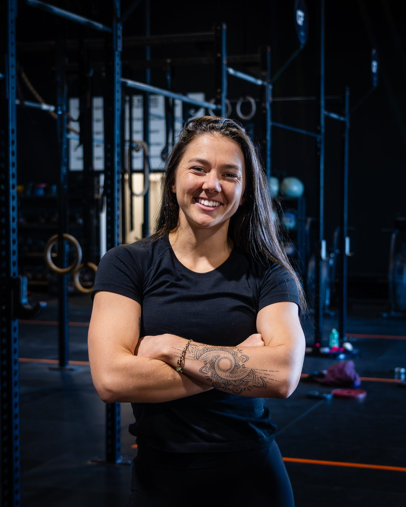
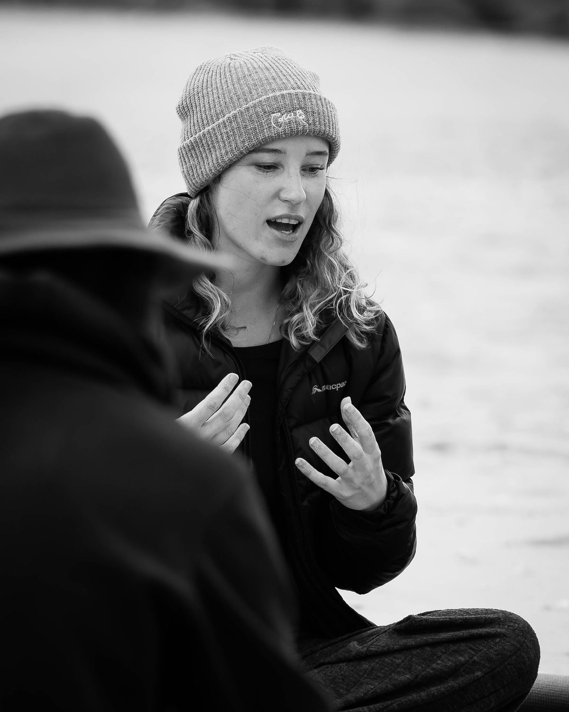
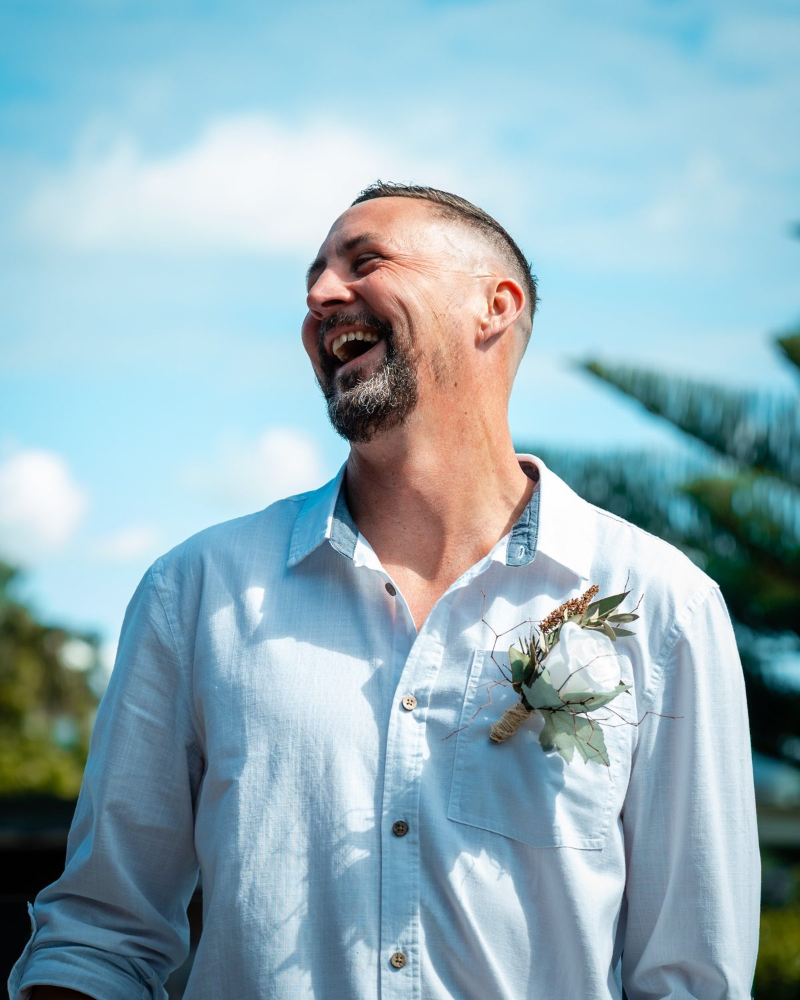

Personal projects
Client work keeps the lights on. Personal projects are where I sharpen the eye: action, culture, and the people who make it all happen. Nobody briefs these. I go out and make them because I love it.

Skate at the Mount
In progress · 2026The brief I set myself: capture Mount Maunganui's skate scene the way the riders see it. Low angles, big air, and the crew cheering every landed trick (and every slam).
I'm shooting with the team riders from The Good Room. I also bought a board and started learning to skate myself. Strictly for research, obviously.


Seen
Ongoing seriesA portrait series about the people who quietly make our communities stronger. The coaches, founders and everyday leaders who show up for others, and rarely get the spotlight themselves.
Everyone deserves to be seen at their best. Know someone who should be next? Send them my way.

JoJo
CoachThe relentless coach who helps people push past what they thought was possible.

Annie
Co-founder, Salt SistersCo-founder of Salt Sisters, a surf programme helping women rediscover their fire and their love for life after trauma.

Joe
Founder, Dadventure CrewBuilding a community of men supporting men, and raising the next generation by being better dads.
Where I'm heading

Surf
Bay of Plenty breaks at first light, from the water and from the air.
Moto
Dirt, roost and riders who live for the next jump.
Mountain biking
Rotorua's trails, from local shredders to the big race weekends.
You send it. I'll shoot it.
Skaters, moto riders, surfers and mountain bikers: I'm after big air, heavy waves and tricks that make the crowd lose it. You bring the send. I bring the cameras, the drone and the edit. Red Bull energy, Bay of Plenty postcode.
Got a story worth telling?
Brands, athletes and publications: if you need images and film that feel real, let's build something together.
Photo, film & drone
One person, one consistent look across every format.
Anywhere in Aotearoa
Based in Papamoa, happy to pack the car or catch a flight.
Usage, sorted
Licensing agreed up front for each project, so you know exactly where the work can go.
Media kit
Reach, audience and recent work in one tidy PDF, sent on request.